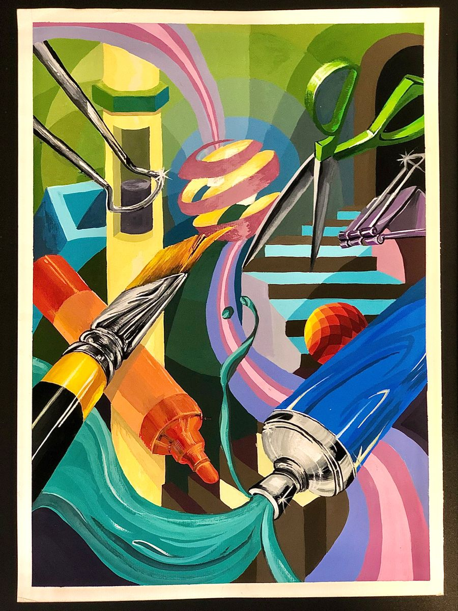

04 - Người sáng tạo tiếp theo
Công cụ thay đổi. Kỹ năng quan trọng cũng thay đổi.
Khi AI làm được nhiều phần thực hiện hơn, người sáng tạo cần mạnh hơn ở những thứ khó giao hoàn toàn cho công cụ: đặt vấn đề, định hướng, đánh giá và góc nhìn.
Bộ kỹ năng mới
5 lớp giá trị nằm phía trên khả năng “tạo ra”.
Bấm từng lớp để xem kỹ năng đó có nghĩa gì trong một quy trình làm việc cùng AI.
01 - Đặt đúng vấn đề
Biết mình đang giải quyết điều gì.
Trước khi hỏi AI, người sáng tạo cần xác định vấn đề, người xem, mục tiêu và tiêu chí của một kết quả tốt.
- Vấn đề là gì?
- Dành cho ai?
- Điều gì cần thay đổi?
- Kết quả tốt trông như thế nào?



Kết luận
Khi AI có thể tạo ra nhiều hơn, lợi thế không còn là “tạo được” - mà là biết điều gì đáng được tạo ra.
AI mở rộng khả năng tạo ra. Con người quyết định điều gì có giá trị.